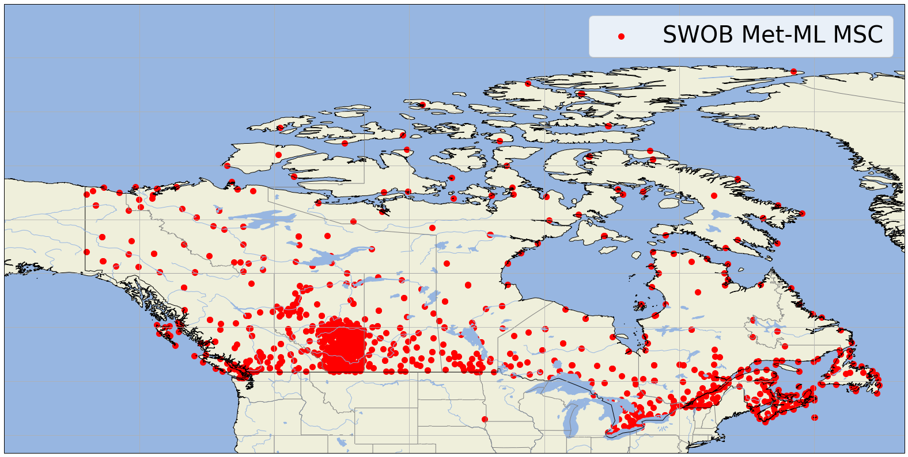
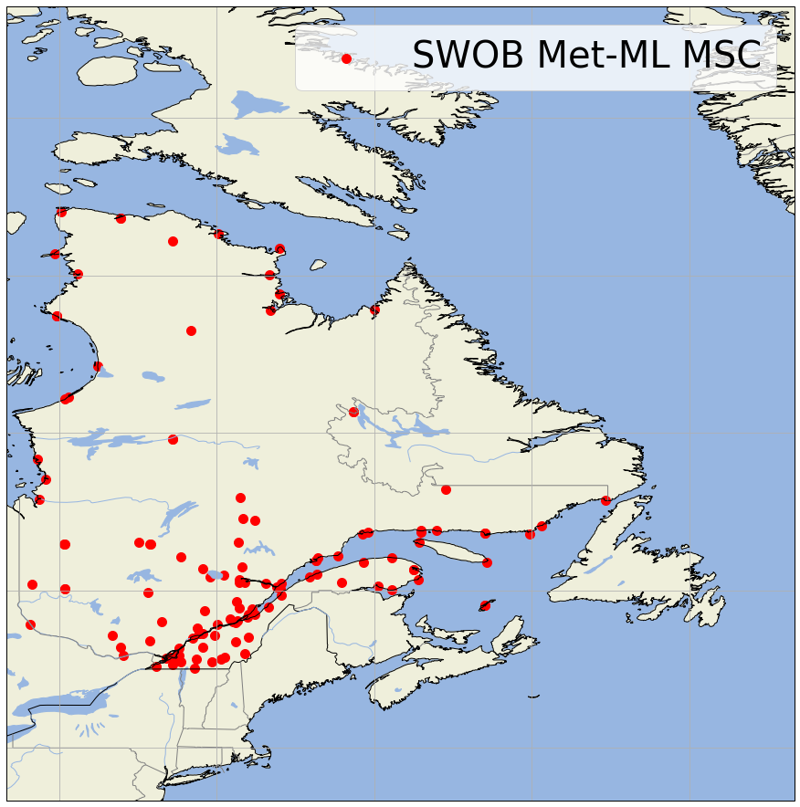
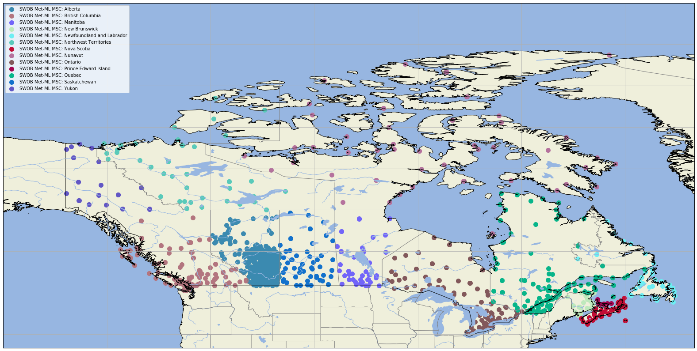

ECCC SWOB Stations

In this post, we will show how to work with Surface Weather Observation from ECCC in XML language (Extensible Markup Language)
SW-OB-XML
For xml files, we will use a package called xml which will allow us to decrypt the xml file.
Pandas does not directly have tools to transform xml into DataFrame because the semi-structured aspect of xml forces us to perform a few steps before filling out a DataFrame.
We will first download an xml file.
We are going to work here with the meteorological ground (SWOB-ML) and marine observations data found on the ECCC Datamart.
Data are available at the following links:
-
Earth observations:
https://dd.meteo.gc.ca/observations/swob-ml/AAAAMMJJ/XXXX/
Where:
-
AAAAMMJJ: observations date, UTC
-
XXXX: station ID (OMM ID)
-
Marine observations:
https://dd.meteo.gc.ca/observations/swob-ml/marine/moored-buoys/YYYMMDD/XXXXXXX
Where:
-
AAAAMMJJ: observations date, UTC
-
XXXXXXX: station ID (OMM ID), can be 5 or 7 digits
-
Partner observations:
https://dd.meteo.gc.ca/observations/swob-ml/partners/NETWORK/YYYMMDD/MSC-ID
Where:
- NETWORK: acronym of the partner network
- YYYYMMDD: observations date, UTC
- MSC-ID: ID
################################################
Description
################################################
The markup language for ground weather (SWOB Met-ML) and marine observations is an XML format for the distribution of weather data observed by Environment and Climate Change Canada and its partners.
The list of observation stations is available here:
https://dd.meteo.gc.ca/observations/doc/swob-xml_station_list.csv
The list of marine observation stations is available here:
https://dd.meteo.gc.ca/observations/doc/swob-xml_marine_station_list.csv
The list of partner stations is available here:
https://dd.meteo.gc.ca/observations/doc/swob-xml_partner_station_list.csv
The format specification is available in the following directory: https://dd.meteo.gc.ca/observations/doc/
Here is the structure of a SWOB file:
First, we import python librairies and define the date we want to extract:
# importations des librairies
from datetime import datetime, timedelta
import pandas as pd
import xml.etree.ElementTree as ET
import wget
import warnings
warnings.filterwarnings("ignore")
import os
from os.path import exists
now = datetime.utcnow() - timedelta(hours=1)
year = str(now.year)
month = str(now.month)
day = str(now.day)
hour = f'{now.hour:02d}'
day = f'{now.day:02d}'
month = f'{now.month:02d}'
date = year+month+day
date
'20200212'
We will list the stations we want to extract: example for the province of Quebec and Ontario.
stations = pd.read_table("swob-xml_station_list.csv", sep=",")
stations_quebec = stations.loc[(stations["Province/Territory"]=='Quebec') ,:]
stations_ontario = stations.loc[(stations["Province/Territory"]=='Ontario') ,:]
stations_mask=pd.concat([stations_quebec,stations_ontario],axis=0)
stations_mask_sans_NaN = stations_mask.dropna()
#stations_mask_sans_NaN_AUTO = stations_mask_sans_NaN.loc[stations_mask_sans_NaN["AUTO/MAN"]=='AUTO',:]
stations_mask_sans_NaN.head()
| IATA_ID | Name | WMO_ID | MSC_ID | Latitude | Longitude | Elevation(m) | Data_Provider | Dataset/Network | AUTO/MAN | Province/Territory | |
|---|---|---|---|---|---|---|---|---|---|---|---|
| 48 | CGAH | LA GRANDE IV | 71823 | 7093GJ5 | 53.75 | -73.6828 | 306.3 | MSC | CA | AUTO | Quebec |
| 49 | CGBC | BAIE-COMEAU | 71890 | 7040442 | 49.1351 | -68.2024 | 22.6 | MSC | CA | AUTO | Quebec |
| 50 | CGCH | CHIBOUGAMAU-CHAPAIS | 73011 | 7091410 | 49.7773 | -74.5304 | 389.3 | MSC | CA | AUTO | Quebec |
| 51 | CGCL | CAUSAPSCAL AIRPORT | 73005 | 7051201 | 48.3088 | -67.2528 | 123 | MSC | CA | AUTO | Quebec |
| 52 | CGGA | GASPE AIRPORT | 73116 | 7052603 | 48.7833 | -64.4833 | 40 | MSC | CA |
1- Working with one station
Let's work with CWTQ station ID:
import requests
stid = 'CWTQ'
tmp_file = 'https://dd.weather.gc.ca/observations/swob-ml/'+date+'/'+stid+'/'+year+'-'+month+'-'+day+'-'+hour+'00-'+stid+'-AUTO-swob.xml'
tmp_file
'https://dd.weather.gc.ca/observations/swob-ml/20200212/CWTQ/2020-02-12-1900-CWTQ-AUTO-swob.xml'
wget.download(tmp_file)
100% [............................................................] 9408 / 9408
'2020-02-12-1900-CWTQ-AUTO-swob.xml'
tree = ET.parse(year+'-'+month+'-'+day+'-'+hour+'00-'+stid+'-AUTO-swob.xml')
root=tree.getroot()
children = root.getchildren()
Here is the root of our data to extract:
root
<Element '{http://www.opengis.net/om/1.0}ObservationCollection' at 0x000000000950ED18>
children
[<Element '{http://www.opengis.net/om/1.0}member' at 0x000000000950EE08>]
Number of elements in our file:
# total amount of items
print(len(root))
1
for child in root.iter('*'):
print(child.items())
#print(child.keys())
for child in root.iter('*'):
print(child)
print(child.attrib)
print(child.attrib.get('value'))
print(child.attrib.get('name'))
The list of variables is available on page 40 of the document: — SWOB-ML_Product_User_Guide_v8.2_f.pdf
data=[]
date_tm=[]
avg_air_temp_pst1hr=[]
max_air_temp_pst1hr=[]
min_air_temp_pst1hr=[]
max_rel_hum_pst1hr=[]
min_rel_hum_pst1hr=[]
stn_pres=[]
mslp=[]
pcpn_amt_pst1hr=[]
wnd_dir_10m_pst1hr_max_spd=[]
max_wnd_spd_10m_pst1hr=[]
avg_wnd_spd_10m_pst10mts=[]
avg_snw_dpth_pst5mts_1=[]
avg_snw_dpth_pst5mts_2=[]
avg_snw_dpth_pst5mts_3=[]
for child in root.iter('*'):
if child.attrib.get('name') == 'date_tm': # date of actual observation
date_tm.append(child.get('value'))
if child.attrib.get('name') == 'avg_air_temp_pst1hr': # average air temperature in the last hour
avg_air_temp_pst1hr.append(child.get('value'))
if child.attrib.get('name') == 'min_air_temp_pst1hr': # minimum air temperature in the last hour
min_air_temp_pst1hr.append(child.get('value'))
if child.attrib.get('name') == 'max_air_temp_pst1hr': # maximum air temperature in the last hour
max_air_temp_pst1hr.append(child.get('value'))
if child.attrib.get('name') == 'max_rel_hum_pst1hr': # maximum relative humidity in the past hour
max_rel_hum_pst1hr.append(child.get('value'))
if child.attrib.get('name') == 'min_rel_hum_pst1hr': # minimum relative humidity in the past hour
min_rel_hum_pst1hr.append(child.get('value'))
if child.attrib.get('name') == 'stn_pres': # pressure at the station (start of the hour)
stn_pres.append(child.get('value'))
if child.attrib.get('name') == 'pcpn_amt_pst1hr': # amount of precipitation in the past hour
pcpn_amt_pst1hr.append(child.get('value'))
if child.attrib.get('name') == 'avg_wnd_spd_10m_pst10mts': # average wind speed at 10 m for 10 min
avg_wnd_spd_10m_pst10mts.append(child.get('value'))
if child.attrib.get('name') == 'max_wnd_spd_10m_pst1hr': # maximum wind speed at 10 m for one hour
max_wnd_spd_10m_pst1hr.append(child.get('value'))
if child.attrib.get('name') == 'wnd_dir_10m_pst1hr_max_spd': # Instant wind direction at 10 m for maximum hourly wind speed, min 0 to 60
wnd_dir_10m_pst1hr_max_spd.append(child.get('value'))
if child.attrib.get('name') == 'mslp': # average sea level pressure
mslp.append(child.get('value'))
if child.attrib.get('name') == 'avg_snw_dpth_pst5mts_1':
avg_snw_dpth_pst5mts_1.append(child.get('value'))
if child.attrib.get('name') == 'avg_snw_dpth_pst5mts_2':
avg_snw_dpth_pst5mts_2.append(child.get('value'))
if child.attrib.get('name') == 'avg_snw_dpth_pst5mts_3':
avg_snw_dpth_pst5mts_3.append(child.get('value'))
data_dict = {'date_tm':date_tm,
'avg_air_temp_pst1hr':avg_air_temp_pst1hr,
'min_air_temp_pst1hr':min_air_temp_pst1hr,
'max_air_temp_pst1hr': max_air_temp_pst1hr,
'max_rel_hum_pst1hr':max_rel_hum_pst1hr,
'min_rel_hum_pst1hr':min_rel_hum_pst1hr,
'stn_pres':stn_pres,
'mslp':mslp,
'pcpn_amt_pst1hr':pcpn_amt_pst1hr,
'avg_wnd_spd_10m_pst10mts':avg_wnd_spd_10m_pst10mts,
'wnd_dir_10m_pst1hr_max_spd':wnd_dir_10m_pst1hr_max_spd,
'max_wnd_spd_10m_pst1hr':max_wnd_spd_10m_pst1hr,
'avg_snw_dpth_pst5mts_1':avg_snw_dpth_pst5mts_1,
'avg_snw_dpth_pst5mts_2':avg_snw_dpth_pst5mts_2,
'avg_snw_dpth_pst5mts_3':avg_snw_dpth_pst5mts_3
}
data= pd.DataFrame(data_dict)
data
| date_tm | avg_air_temp_pst1hr | min_air_temp_pst1hr | max_air_temp_pst1hr | max_rel_hum_pst1hr | min_rel_hum_pst1hr | stn_pres | mslp | pcpn_amt_pst1hr | avg_wnd_spd_10m_pst10mts | wnd_dir_10m_pst1hr_max_spd | max_wnd_spd_10m_pst1hr | avg_snw_dpth_pst5mts_1 | avg_snw_dpth_pst5mts_2 | avg_snw_dpth_pst5mts_3 | |
|---|---|---|---|---|---|---|---|---|---|---|---|---|---|---|---|
| 0 | 2020-02-18T20:00:00.000Z | -0.7 | -1.2 | -0.3 | 86 | 83 | 1006.6 | 1010.7 | 0 | 40.8 | 151 | 56.4 | 37 | 33 | 37 |
2- Reading the station list
stations = pd.read_table("swob-xml_station_list.csv", sep=",")
stations.head()
| IATA_ID | Name | WMO_ID | MSC_ID | Latitude | Longitude | Elevation(m) | Data_Provider | Dataset/Network | AUTO/MAN | Province/Territory | |
|---|---|---|---|---|---|---|---|---|---|---|---|
| 0 | 4400488 | East Chedabucto Bay | 44488 | 9302000 | 45.445 | -60.9538 | 0 | nan | nan | AUTO | nan |
| 1 | 4400489 | West Chedabucto Bay | 44489 | 9302001 | 45.4869 | -61.141 | 0 | nan | nan | AUTO | nan |
| 2 | 4400490 | West Bay of Fundy | 44490 | 9300300 | 44.6606 | -66.3686 | 0 | nan | nan | AUTO | nan |
| 3 | 4600303 | Southern Georgia Strait | 46303 | 9102000 | 49.025 | -123.43 | 0 | nan | nan | AUTO | nan |
| 4 | 4600304 | Entrance to English Bay | 46304 | 9102001 | 49.3017 | -123.357 | 0 | nan | nan | AUTO | nan |
3- Filter stations over a specific province
stations_mask = stations.loc[stations["Province/Territory"]=='Quebec',:]
stations_mask.head()
| IATA_ID | Name | WMO_ID | MSC_ID | Latitude | Longitude | Elevation(m) | Data_Provider | Dataset/Network | AUTO/MAN | Province/Territory | |
|---|---|---|---|---|---|---|---|---|---|---|---|
| 48 | CGAH | LA GRANDE IV | 71823 | 7093GJ5 | 53.75 | -73.6828 | 306.3 | MSC | CA | AUTO | Quebec |
| 49 | CGBC | BAIE-COMEAU | 71890 | 7040442 | 49.1351 | -68.2024 | 22.6 | MSC | CA | AUTO | Quebec |
| 50 | CGCH | CHIBOUGAMAU-CHAPAIS | 73011 | 7091410 | 49.7773 | -74.5304 | 389.3 | MSC | CA | AUTO | Quebec |
| 51 | CGCL | CAUSAPSCAL AIRPORT | 73005 | 7051201 | 48.3088 | -67.2528 | 123 | MSC | CA | AUTO | Quebec |
| 52 | CGGA | GASPE AIRPORT | 73116 | 7052603 | 48.7833 | -64.4833 | 40 | MSC | CA | AUTO | Quebec |
#stations_mask_sans_NaN = stations_mask.dropna()
#stations_mask_sans_NaN
We want to work with only stations with automatic recording:
stations_mask_AUTO = stations_mask.loc[stations_mask["AUTO/MAN"]=='AUTO',:]
stations_mask_AUTO.head()
| IATA_ID | Name | WMO_ID | MSC_ID | Latitude | Longitude | Elevation(m) | Data_Provider | Dataset/Network | AUTO/MAN | Province/Territory | |
|---|---|---|---|---|---|---|---|---|---|---|---|
| 48 | CGAH | LA GRANDE IV | 71823 | 7093GJ5 | 53.75 | -73.6828 | 306.3 | MSC | CA | AUTO | Quebec |
| 49 | CGBC | BAIE-COMEAU | 71890 | 7040442 | 49.1351 | -68.2024 | 22.6 | MSC | CA | AUTO | Quebec |
| 50 | CGCH | CHIBOUGAMAU-CHAPAIS | 73011 | 7091410 | 49.7773 | -74.5304 | 389.3 | MSC | CA | AUTO | Quebec |
| 51 | CGCL | CAUSAPSCAL AIRPORT | 73005 | 7051201 | 48.3088 | -67.2528 | 123 | MSC | CA | AUTO | Quebec |
| 52 | CGGA | GASPE AIRPORT | 73116 | 7052603 | 48.7833 | -64.4833 | 40 | MSC | CA | AUTO | Quebec |
Example of a loop on all stations in Quebec:
for index, row in stations_mask_AUTO.iterrows():
stid = row['IATA_ID']
tmp_file = 'https://dd.weather.gc.ca/observations/swob-ml/'+date+'/'+stid+'/'+year+'-'+month+'-'+day+'-'+hour+'00-'+stid+'-AUTO-swob.xml'
r = requests.get(tmp_file)
if r.status_code != 200:
continue
root = ET.fromstring(r.content)
data=[]
date_tm=[]
avg_air_temp_pst1hr=[]
max_air_temp_pst1hr=[]
min_air_temp_pst1hr=[]
max_rel_hum_pst1hr=[]
min_rel_hum_pst1hr=[]
stn_pres=[]
mslp=[]
pcpn_amt_pst1hr=[]
wnd_dir_10m_pst1hr_max_spd=[]
max_wnd_spd_10m_pst1hr=[]
avg_wnd_spd_10m_pst10mts=[]
avg_snw_dpth_pst5mts_1=[]
avg_snw_dpth_pst5mts_2=[]
avg_snw_dpth_pst5mts_3=[]
for child in root.iter('*'):
if child.attrib.get('name') == 'date_tm': # date-heure d’observation réelle
date_tm.append(child.get('value'))
if child.attrib.get('name') == 'avg_air_temp_pst1hr': # température de l'air moyenne au cours de la dernière heure (minutes 00 à 60)
avg_air_temp_pst1hr.append(child.get('value'))
if child.attrib.get('name') == 'min_air_temp_pst1hr': # température de l'air minimale au cours de la dernière heure (minutes 00 à 60)
min_air_temp_pst1hr.append(child.get('value'))
if child.attrib.get('name') == 'max_air_temp_pst1hr': # température de l'air maximale au cours de la dernière heure (minutes 00 à 60)
max_air_temp_pst1hr.append(child.get('value'))
if child.attrib.get('name') == 'max_rel_hum_pst1hr': # humidité relative maximale au cours de la dernière heure
max_rel_hum_pst1hr.append(child.get('value'))
if child.attrib.get('name') == 'min_rel_hum_pst1hr':# humidité relative minimale au cours de la dernière heure
min_rel_hum_pst1hr.append(child.get('value'))
if child.attrib.get('name') == 'stn_pres': # pression à la station (début de l’heure)
stn_pres.append(child.get('value'))
if child.attrib.get('name') == 'pcpn_amt_pst1hr': # quantité de précipitation au cours de la dernière heure
pcpn_amt_pst1hr.append(child.get('value'))
if child.attrib.get('name') == 'avg_wnd_spd_10m_pst10mts': # vitesse moyenne du vent à 10 m pendant 10 min
avg_wnd_spd_10m_pst10mts.append(child.get('value'))
if child.attrib.get('name') == 'max_wnd_spd_10m_pst1hr': # vitesse maximale du vent à 10 m pendant une heure
max_wnd_spd_10m_pst1hr.append(child.get('value'))
if child.attrib.get('name') == 'wnd_dir_10m_pst1hr_max_spd': #Direction instantanée du vent à 10 m pour une vitesse horaire maximale du vent, min 0 à 60
wnd_dir_10m_pst1hr_max_spd.append(child.get('value'))
if child.attrib.get('name') == 'mslp': # pression moyenne au niveau de la mer
mslp.append(child.get('value'))
if child.attrib.get('name') == 'avg_snw_dpth_pst5mts_1':
avg_snw_dpth_pst5mts_1.append(child.get('value'))
if child.attrib.get('name') == 'avg_snw_dpth_pst5mts_2':
avg_snw_dpth_pst5mts_2.append(child.get('value'))
if child.attrib.get('name') == 'avg_snw_dpth_pst5mts_3':
avg_snw_dpth_pst5mts_3.append(child.get('value'))
data_dict = {'date_tm':date_tm,
'avg_air_temp_pst1hr':avg_air_temp_pst1hr,
'min_air_temp_pst1hr':min_air_temp_pst1hr,
'max_air_temp_pst1hr': max_air_temp_pst1hr,
'max_rel_hum_pst1hr':max_rel_hum_pst1hr,
'min_rel_hum_pst1hr':min_rel_hum_pst1hr,
'stn_pres':stn_pres,
'mslp':mslp,
'pcpn_amt_pst1hr':pcpn_amt_pst1hr,
'avg_wnd_spd_10m_pst10mts':avg_wnd_spd_10m_pst10mts,
'wnd_dir_10m_pst1hr_max_spd':wnd_dir_10m_pst1hr_max_spd,
'max_wnd_spd_10m_pst1hr':max_wnd_spd_10m_pst1hr,
'avg_snw_dpth_pst5mts_1':avg_snw_dpth_pst5mts_1,
'avg_snw_dpth_pst5mts_2':avg_snw_dpth_pst5mts_2,
'avg_snw_dpth_pst5mts_3':avg_snw_dpth_pst5mts_3
}
for key,value in data_dict.items():
if not value:
data_dict[key] = 'NaN'
data= pd.DataFrame(data_dict)
os.makedirs('D:/Utilisateurs/guillaume/Documents/GitHub/Python_XML/SWOB/'+now.strftime("%Y%m")+'/', exist_ok=True)
# file = 'D:/Utilisateurs/guillaume/Documents/GitHub/Python_XML/SWOB/'+now.strftime("%Y%m")+'/'+str(int(row['WMO_ID']))+'_'+now.strftime("%Y%m")+'.csv'
file = 'D:/Utilisateurs/guillaume/Documents/GitHub/Python_XML/SWOB/'+now.strftime("%Y%m")+'/'+str(row['MSC_ID'])+'_'+now.strftime("%Y%m")+'.csv'
if exists(file):
#print ("File exist")
data.to_csv(r'D:/Utilisateurs/guillaume/Documents/GitHub/Python_XML/SWOB/'+now.strftime("%Y%m")+'/'+str(row['MSC_ID'])+'_'+now.strftime("%Y%m")+'.csv',mode='a',index=False,header=False)
else:
#print ("File not exist")
pd.DataFrame(row).T.to_csv(r'D:/Utilisateurs/guillaume/Documents/GitHub/Python_XML/SWOB/'+now.strftime("%Y%m")+'/'+str(row['MSC_ID'])+'_'+now.strftime("%Y%m")+'.csv',index=False)
data.to_csv(r'D:/Utilisateurs/guillaume/Documents/GitHub/Python_XML/SWOB/'+now.strftime("%Y%m")+'/'+str(row['MSC_ID'])+'_'+now.strftime("%Y%m")+'.csv',mode='a',index=False)
4- We will trace the location of the stations:
We will start by extracting the latitudes and longitudes:
list_lat = stations.loc[stations["AUTO/MAN"]=='AUTO',:]['Latitude'].values
list_lon = stations.loc[stations["AUTO/MAN"]=='AUTO',:]['Longitude'].values
import cartopy.crs as ccrs
import cartopy.feature as cfeature
import matplotlib.pylab as plt
import numpy as np
fig = plt.figure(figsize=(28,16))
ax = plt.axes(projection=ccrs.PlateCarree())
ax.set_extent((-150.0, -50, 40, 90))
ax.add_feature(cfeature.OCEAN.with_scale('50m')) # couche ocean
ax.add_feature(cfeature.LAND.with_scale('50m')) # couche land
ax.add_feature(cfeature.LAKES.with_scale('50m')) # couche lac
ax.add_feature(cfeature.BORDERS.with_scale('50m')) # couche frontieres
ax.add_feature(cfeature.RIVERS.with_scale('50m')) # couche rivières
coast = cfeature.NaturalEarthFeature(category='physical', scale='10m', # ajout de la couche cotière
facecolor='none', name='coastline')
ax.add_feature(coast, edgecolor='black')
states_provinces = cfeature.NaturalEarthFeature(
category='cultural',
name='admin_1_states_provinces_lines',
scale='10m',
facecolor='none')
ax.add_feature(states_provinces, edgecolor='gray')
ax.gridlines()
mm = ax.scatter(list_lon, list_lat, c='red', s=100, label='SWOB Met-ML MSC')
#mm = ax.scatter(dfstat['lon'].values, dfstat['lat'].values, c='green', s=400, label='Site')
plt.legend(loc="best", markerscale=1., scatterpoints=1, fontsize=40)
# Define gridline locations and draw the lines using cartopy's built-in gridliner:
xticks = np.arange(-150.0,-40.0,20)
yticks =np.arange(10,80,10)
fig.canvas.draw()
plt.savefig('Localisation_SWOB_CANADA.png', bbox_inches='tight', pad_inches=0.1)
plt.show()
plt.close()

5- Just over Quebec:
list_lat = stations.loc[(stations["AUTO/MAN"]=='AUTO') & (stations["Province/Territory"]=='Quebec'),:]['Latitude'].values
list_lon = stations.loc[(stations["AUTO/MAN"]=='AUTO') & (stations["Province/Territory"]=='Quebec'),:]['Longitude'].values
import cartopy.crs as ccrs
import cartopy.feature as cfeature
import matplotlib.pylab as plt
import numpy as np
fig = plt.figure(figsize=(28,16))
ax = plt.axes(projection=ccrs.PlateCarree())
ax.set_extent((-80.0, -50, 40, 70))
ax.add_feature(cfeature.OCEAN.with_scale('50m')) # couche ocean
ax.add_feature(cfeature.LAND.with_scale('50m')) # couche land
ax.add_feature(cfeature.LAKES.with_scale('50m')) # couche lac
ax.add_feature(cfeature.BORDERS.with_scale('50m')) # couche frontieres
ax.add_feature(cfeature.RIVERS.with_scale('50m')) # couche rivières
coast = cfeature.NaturalEarthFeature(category='physical', scale='10m', # ajout de la couche cotière
facecolor='none', name='coastline')
ax.add_feature(coast, edgecolor='black')
states_provinces = cfeature.NaturalEarthFeature(
category='cultural',
name='admin_1_states_provinces_lines',
scale='10m',
facecolor='none')
ax.add_feature(states_provinces, edgecolor='gray')
ax.gridlines()
mm = ax.scatter(list_lon, list_lat, c='red', s=100, label='SWOB Met-ML MSC')
#mm = ax.scatter(dfstat['lon'].values, dfstat['lat'].values, c='green', s=400, label='Site')
plt.legend(loc="best", markerscale=1., scatterpoints=1, fontsize=40)
# Define gridline locations and draw the lines using cartopy's built-in gridliner:
xticks = np.arange(-150.0,-40.0,20)
yticks =np.arange(10,80,10)
fig.canvas.draw()
plt.savefig('Localisation_SWOB_Quebec.png', bbox_inches='tight', pad_inches=0.1)
plt.show()
plt.close()

6- If we want to plot by grouping by province:
We only want the “Automatic” stations and group them by province.
grouped_dataframe = stations.loc[stations["AUTO/MAN"]=='AUTO',:].groupby('Province/Territory')
grouped_dataframe.count()
| Province/Territory | IATA_ID | Name | WMO_ID | MSC_ID | Latitude | Longitude | Elevation(m) | Data_Provider | Dataset/Network | AUTO/MAN |
|---|---|---|---|---|---|---|---|---|---|---|
| Alberta | 240 | 240 | 196 | 240 | 240 | 240 | 240 | 240 | 240 | 240 |
| British Columbia | 119 | 119 | 101 | 119 | 119 | 119 | 119 | 119 | 119 | 119 |
| Manitoba | 47 | 47 | 44 | 47 | 47 | 47 | 47 | 47 | 47 | 47 |
| New Brunswick | 21 | 21 | 20 | 21 | 21 | 21 | 21 | 21 | 21 | 21 |
| Newfoundland and Labrador | 36 | 36 | 34 | 36 | 36 | 36 | 36 | 36 | 36 | 36 |
| Northwest Territories | 49 | 49 | 34 | 49 | 49 | 49 | 49 | 49 | 49 | 49 |
| Nova Scotia | 42 | 42 | 39 | 42 | 42 | 42 | 42 | 42 | 42 | 42 |
| Nunavut | 63 | 63 | 52 | 63 | 63 | 63 | 63 | 63 | 63 | 63 |
| Ontario | 111 | 111 | 103 | 111 | 111 | 111 | 111 | 111 | 111 | 111 |
| Prince Edward Island | 7 | 7 | 5 | 7 | 7 | 7 | 7 | 7 | 7 | 7 |
| Quebec | 122 | 122 | 103 | 122 | 122 | 122 | 122 | 122 | 122 | 122 |
| Saskatchewan | 57 | 57 | 56 | 57 | 57 | 57 | 57 | 57 | 57 | 57 |
| Yukon | 23 | 23 | 17 | 23 | 23 | 23 | 23 | 23 | 23 | 23 |
for name,group in grouped_dataframe:
print(name)
Alberta
British Columbia
Manitoba
New Brunswick
Newfoundland and Labrador
Northwest Territories
Nova Scotia
Nunavut
Ontario
Prince Edward Island
Quebec
Saskatchewan
Yukon
grouped_dataframe.get_group('Quebec').head()
| IATA_ID | Name | WMO_ID | MSC_ID | Latitude | Longitude | Elevation(m) | Data_Provider | Dataset/Network | AUTO/MAN | Province/Territory | |
|---|---|---|---|---|---|---|---|---|---|---|---|
| 48 | CGAH | LA GRANDE IV | 71823 | 7093GJ5 | 53.75 | -73.6828 | 306.3 | MSC | CA | AUTO | Quebec |
| 49 | CGBC | BAIE-COMEAU | 71890 | 7040442 | 49.1351 | -68.2024 | 22.6 | MSC | CA | AUTO | Quebec |
| 50 | CGCH | CHIBOUGAMAU-CHAPAIS | 73011 | 7091410 | 49.7773 | -74.5304 | 389.3 | MSC | CA | AUTO | Quebec |
| 51 | CGCL | CAUSAPSCAL AIRPORT | 73005 | 7051201 | 48.3088 | -67.2528 | 123 | MSC | CA | AUTO | Quebec |
| 52 | CGGA | GASPE AIRPORT | 73116 | 7052603 | 48.7833 | -64.4833 | 40 | MSC | CA | AUTO | Quebec |
We create a random color list for all of our provinces.
import random
number_of_colors = len(grouped_dataframe)
color = ["#"+''.join([random.choice('0123456789ABCDEF') for j in range(6)])
for i in range(number_of_colors)]
import cartopy.crs as ccrs
import cartopy.feature as cfeature
import matplotlib.pylab as plt
import numpy as np
fig = plt.figure(figsize=(28,16))
ax = plt.axes(projection=ccrs.PlateCarree())
ax.set_extent((-150.0, -50, 40, 90))
ax.add_feature(cfeature.OCEAN.with_scale('50m')) # couche ocean
ax.add_feature(cfeature.LAND.with_scale('50m')) # couche land
ax.add_feature(cfeature.LAKES.with_scale('50m')) # couche lac
ax.add_feature(cfeature.BORDERS.with_scale('50m')) # couche frontieres
ax.add_feature(cfeature.RIVERS.with_scale('50m')) # couche rivières
coast = cfeature.NaturalEarthFeature(category='physical', scale='10m', # ajout de la couche cotière
facecolor='none', name='coastline')
ax.add_feature(coast, edgecolor='black')
states_provinces = cfeature.NaturalEarthFeature(
category='cultural',
name='admin_1_states_provinces_lines',
scale='10m',
facecolor='none')
ax.add_feature(states_provinces, edgecolor='gray')
ax.gridlines()
i = 0
for name,group in grouped_dataframe:
list_lon= grouped_dataframe.get_group(name)['Longitude'].values
list_lat= grouped_dataframe.get_group(name)['Latitude'].values
mm = ax.scatter(list_lon, list_lat, c=color[i], s=100, label='SWOB Met-ML MSC: '+ name )
plt.legend(loc="best", markerscale=1., scatterpoints=1, fontsize=10)
i+=1
# Define gridline locations and draw the lines using cartopy's built-in gridliner:
xticks = np.arange(-150.0,-40.0,20)
yticks =np.arange(10,80,10)
fig.canvas.draw()
plt.savefig('Localisation_SWOB_CANADA.png', bbox_inches='tight', pad_inches=0.1)
plt.show()
plt.close()

Guillaume Dueymes
Data Scientist and Research Assistant
My research interests include data science, data management and climate science.